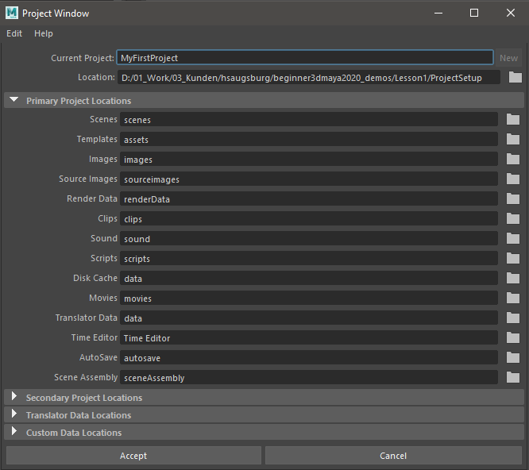
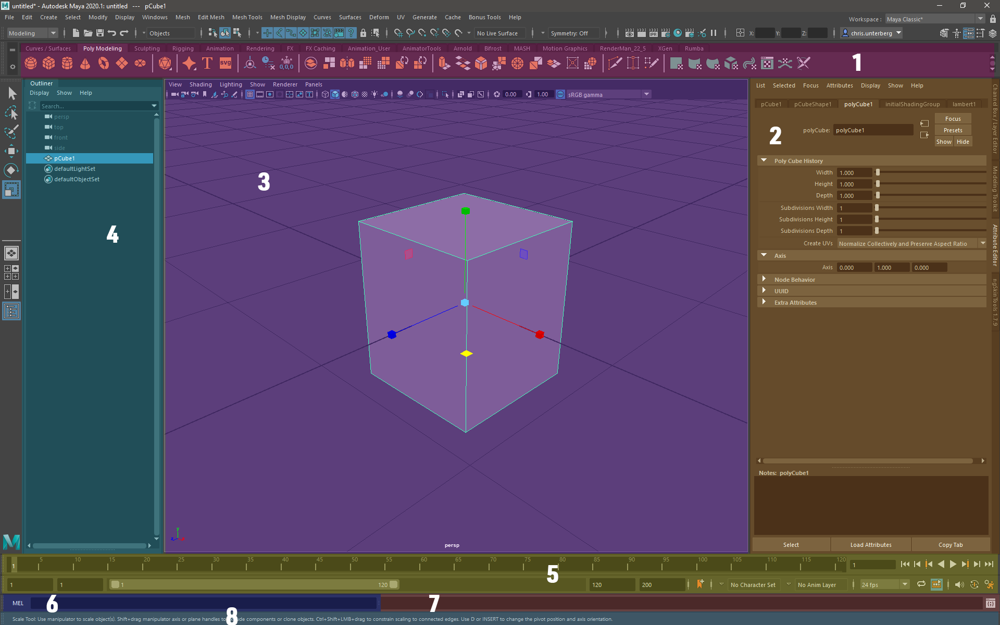
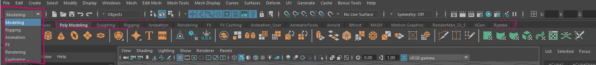
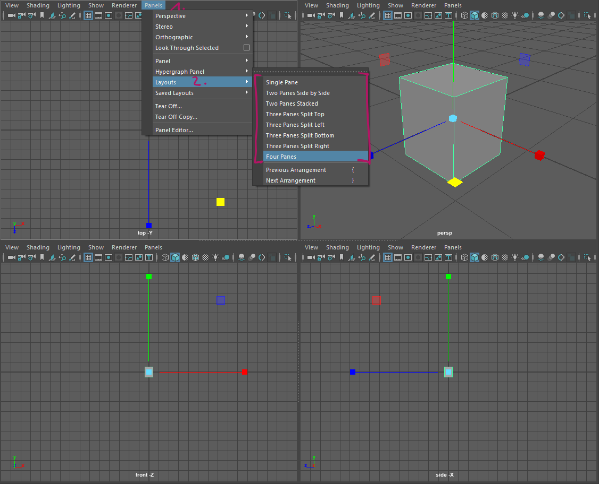
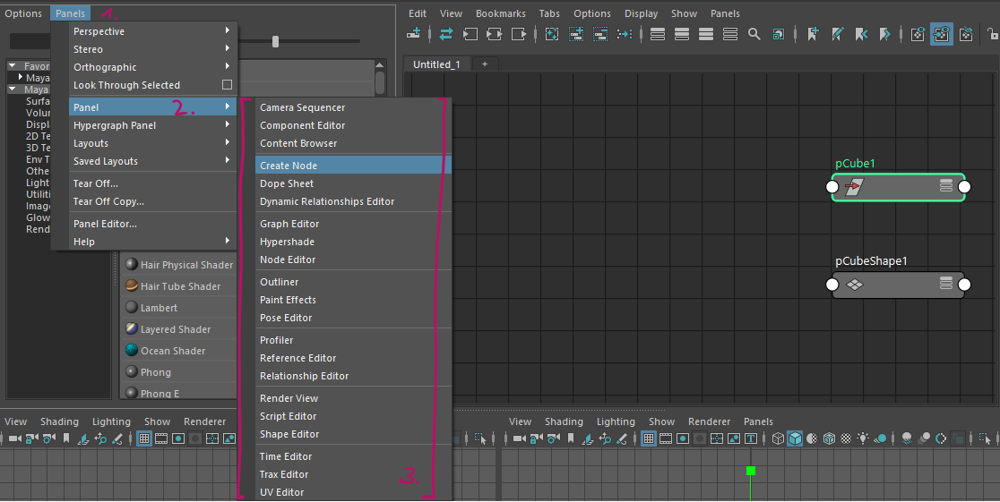
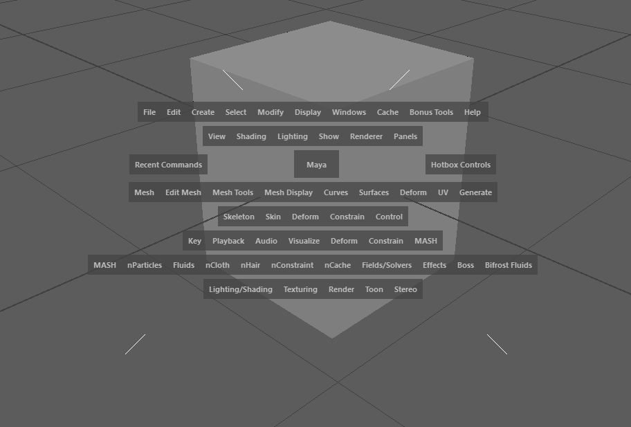
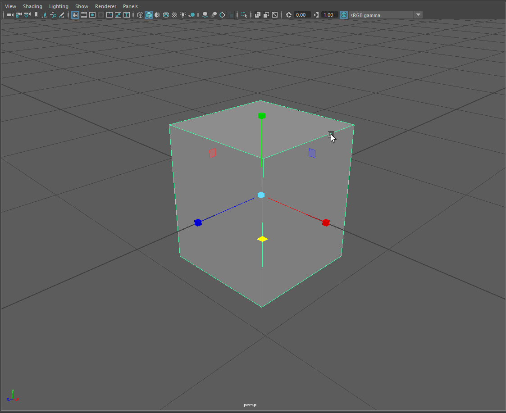

Lesson One¶
Workspace Setup¶
What is a workspace?¶
Maya uses workspaces to organice projects into folder structures. It will create a bunch of folders for assets, textures, playblasts, autosaves and more on a per-need basis.
Warning
Setting up a workspace¶
Go to File -> Project Window
Click on the folder icon behind ‘Location’
Choose the location for your project, select “Select”
Insert the project’s name in ‘Current Project’
Click ‘Accept’
The new project has been created and been set as the current project
Note
If you want to learn more about how Maya organizes files check out the official Maya Documentation
Switching workspaces¶
You can also switch to an existing workspace. A workspace always has a workspace.mel file.
Go to File -> Set Project
Choose the folder that contains your project
Click “Set”
If there is no project set up in this folder, Maya will ask you if you want to create a default one.
Editing a workspace¶
Workspaces are defined by a human readable workspace.mel file. This file contains all information and paths related
to your project. It can be opened by any text editor, for example notepad++. If you want to change a path, this can be
done by exchanging the path in this file. Note that Maya won’t copy your old files over, but will save all newly created
files in the new location.
Interface¶
Maya’s interface can be daunting when opened for the first time. We want to have a closer look at the GUI and learn how different tasks are sorted intro different workspaces in this lesson. We will also have a look at the most important hotkeys and viewport navigation.
Overview¶
Number |
Name |
Usage |
|---|---|---|
1 |
Shelves |
Quick access to many functions and scripts via icons sorted by tasks |
2 |
Attribute Editor / Channelbox |
Main editors for values and variables of selected objects and nodes |
3 |
Viewport |
Main interaction window with the 3D scene and world |
4 |
Outliner |
Quick access and manipulation of the scene hierarchy |
5 |
Timeline Area |
Scrub time, play animayion, access to animation settings |
6 |
Console |
Insert mel or python commands and call them |
7 |
Script output |
Outputs messages, warnings and errors from script editor |
8 |
Status lines |
Outputs messages about mayas status and tooltips |
Shelves and Workspaces¶
Maya’s tools are sorted into shelves and workspaces. Menus in the menu bar will appear and disappear based on the workspace selected. There are 5 main workspaces accessed by the dropdown in the top left corner:
Modeling
Rigging
Animation
FX
Rendering
These workspaces correspond to tasks in the 3d pipeline and will show all tools needed for these tasks.
Shelves are customizable icon bars. You can use these bars to quickly call different Maya commands. Shelves are sorted by tool sets and tasks and you will most likely create your own shelves while working with Maya.
Note
Warning
Find out more about the power of shelves in the official Maya Documentation
Note
You can find a lot more information about the interface, including menu sets that are not covered in this quick start in the official Autodesk Maya Manual
Panel Setup¶
Maya’s viewport is made up of up to four panels. It supports different panel layouts and allows any editor content in these panels. You will that you like different layouts for different tasks or discover a favourite layout. Starting out, it makes the most sense to try different layouts for different tasks until you find one that fits your style of working best.
Switch the layout either via the hotbox. or by going to Panels -> Layouts -> [YOUR LAYOUT] in the small menu bar over the editor pane.
You can switch the content of each pane in the small menu bar over the editor pane by going to Panels -> Panel -> [YOUR PANEL CONTENT]
Hotbox¶
Open the hotbox by pressing and holding down Space over the viewport. Mayas hotbox is a quicker way of accessing all menus in the menu bar.
Tap spacebar to toggle between your panel setup and a maximised viewport.
You can click the middle-area of the hotbox while holding down space to switch the contents / camera of the panel under the cursor.
Note
Main Editor Windows¶
The official Autodesk Maya Documentation is very thorough explaining the main editor windows. You can refer to their manual pages for more information.